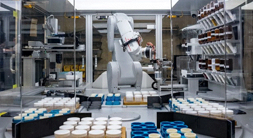

신소재 개발을 돕는 AI 기술
정동고 박가온 기자 | 2024년 11월 7일 목요일
미국 캘리포니아의 버클리 연구소에서는 AI 모델을 활용하여 신소재를 연구 및 개발하고 있다. 연구소 측은 다국적 IT 기업인 구글 사에서 개발한 AI 모델인 GNoME을 활용하여 약 220만개의 신소재를 개발해내었고, 안정된 물질을 기록한 자료 데이터베이스인 ICSD를 통하여 이 중 약 2만개의 신소재가 안정적이라는 사실을 검증하였다고 밝혔다. AI가 사회 전반 다양한 분야에서 활약하고 있는 요즘, AI가 신소재 공학 분야에서 앞으로 어떤 행보를 보여줄지 귀추가 주목된다. (박가온 기자)